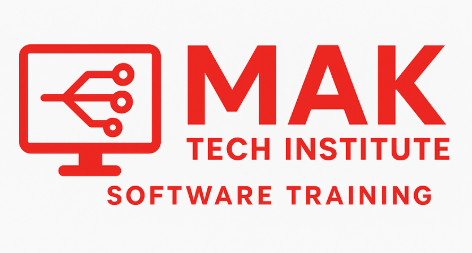

FULL STACK SOFTWARE TESTING COURSE

MAK Tech Institute
Software Training
☰
Home
About
Sign up
Contact
CLICK HERE FOR MORE DETAILS SYLABUS
Manual Software Testing Concepts:
Fundamentals: Software Testing Principles, SDLC (Software Development Life Cycle), STLC (Software Testing Life Cycle).
Testing Types & Techniques: Functional (Smoke, Sanity, Regression), Non-functional (Performance, Security), Levels of Testing (Unit, Integration, System, UAT).
Test Management: Test Case Design, Test Plan Preparation, Defect Tracking (e.g., JIRA), Test Reporting.
Core Programming for Automation (e.g., Java):
Fundamentals: Data types, variables, operators, control flow statements (if-else, loops), arrays, strings.
Object-Oriented Programming (OOP): Classes, objects, encapsulation, inheritance, polymorphism, abstraction.
Advanced Concepts: Exception handling, file handling, collections (ArrayList, HashMap), database connectivity (JDBC).
Web Automation Testing (e.g., Selenium WebDriver):
Selenium Basics: WebDriver architecture, installation and setup, browser interactions.
Locators: ID, Name, Class Name, LinkText, Partial Link Text, XPath, CSS Selectors.
WebElement Interactions: Handling text boxes, checkboxes, radio buttons, dropdowns, frames, alerts, multiple windows.
Advanced Selenium: Synchronization (Implicit/Explicit/Fluent Waits), Actions Class (mouse actions, keyboard events), JavaScript Executor.
Frameworks & Tools: TestNG (annotations, assertions, listeners, reporting), Maven (dependency management), WebDriverManager.
API Testing:
API Fundamentals: Understanding API architecture, RESTful APIs.
Tools: Postman (creating and validating API requests), REST Assured (automation framework for API testing).
Concepts: Request methods (GET, POST, PUT, DELETE), status codes, request/response validation.
Database Testing:
SQL Fundamentals: Creating databases and tables, writing and executing queries (SELECT, INSERT, UPDATE, DELETE).
Validation: Verifying data integrity, consistency, and correctness in the database.
Advanced Topics & Tools:
BDD (Behavior-Driven Development): Cucumber (Gherkin syntax for writing acceptance tests).
CI/CD Integration: Jenkins (continuous integration and delivery).
Version Control: Git/SVN (code repository management).
Performance Testing: Introduction to tools like JMeter.
Security Testing: Basic concepts and principles.